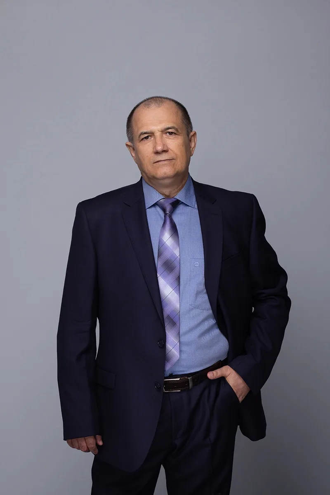

Оздоровительное дыхание по методу Бутейко
На занятиях учимся замечать особенности своего дыхания, понимать смысл практики и постепенно осваивать её вместе со мной
Первый вопрос ни к чему не обязывает

Андрей Туманов
методист-инструктор по методу Бутейко